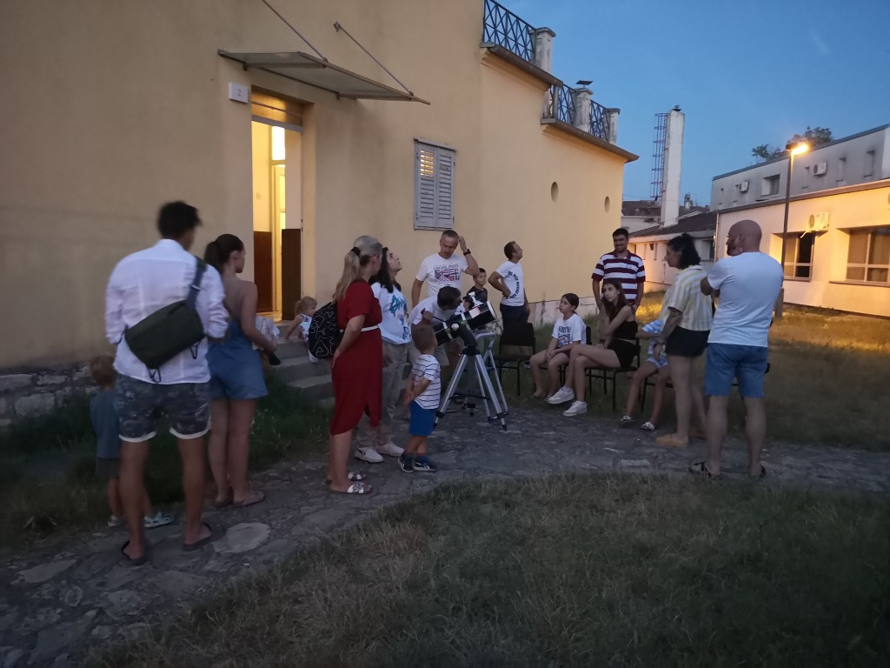

Posjet Pulskoj Zvjezdarnici
Informacije za posjetitelje i grupe
Kako bi Astronomsko društvo "Istra" što uspješnije provodilo svoju temeljnu djelatnost, popularizaciju astronomije i ostalih srodnih znanosti, na Pulskoj Zvjezdarnici se upriličuju posjeti zainteresiranih pojedinaca i grupa.
Kontakt za dogovor
Posjetitelji se mogu najaviti i dogovoriti posjet na GSM: +385 91 214 1966, te na e-mail adippula@gmail.com
Posjet ovisno o uzrastu posjetitelja uključuje općenito multimedijalno predavanje o svemiru, povijesti Pulske Zvjezdarnice, o trenutnim aktivnostima i promatranje teleskopom (ovisno o vremenskim uvjetima i objektima koji se u tom trenutku mogu vidjeti).


